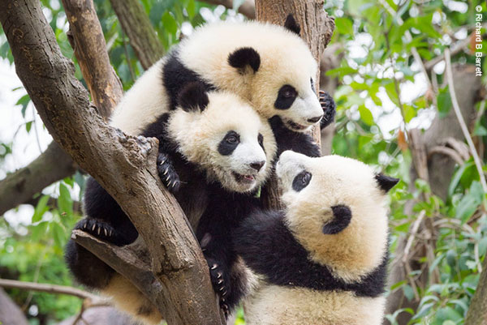

대왕판다는 중국 쓰촨성 지방과 티베트의 고산 지대에 서식하는 곰과의 포유동물입니다.
대왕판다는 어디에 살까요?
대왕판다의 성격은 어떤가요?
야생의 대왕판다들은 왜 멸종위기에 처했을까요?
과도한 재배와 가축 방목
지난 수십년 간 판다 서식지를 파괴했던 벌목과 탄광 개발 등의 위협은 중국 정부와 관련 기관의 강력한 규제로 줄어들었습니다. 하지만 주요 서식지를 갈라 놓는 지역사회의 식량 재배지 확대와 가축 방목은 빈곤이 극심한 중국 북부 민산, 량산 지역에서 무분별하게 이루어지고 있습니다. 특히 가축의 방목은 판다 서식지에 있어서 커다란 위협입니다.서식지 파괴와 파편화
중국의 엄격한 제재는 그간 자행되어 온 불법 밀렵을 줄이는데 성공했지만, 도로나 댐 건설 등 대규모 개발 산업은 판다의 서식지를 파편화시켰습니다. 대왕판다는 현재 33여개의 고립된 집단으로 서식하고 있으며, 대부분의 집단은 그 수가 채 100여마리도 되지 않습니다. 서식지 파편화는 각 집단들의 유전적 다양성이 감소해 자체 번식과 독자 생존이 힘든 상황을 야기하고 있습니다.관광산업
대규모의 관광 산업 또한 대왕판다를 위협하는 원인입니다. 2000년대 들어 80% 가량의 중국 내 자연 보호구역들은 관광 목적으로 개발되어 해마다 수십만명의 관광객들을 끌어모았습니다. 인간의 편의를 위한 관광지 개발 활동은 야생의 판다가 견디기 어려운 소음과 각종 쓰레기를 발생시키고 있습니다.기후변화
기후변화는 판다에게도 심각한 위기 상황입니다! 지난 수십년 간 수집된 기상 데이터에 따르면 판다 서식지의 평균 온도는 계속해서 올라가고 있습니다. 친링 산간 지역에서 이루어진 연구 결과, 기후변화로 판다가 좋아하는 대나무 종의 서식지가 높은 곳으로 이동하면, 향후 50년 이내 판다 보호구역은 현재 판다 서식지의 절반 이하로 줄어들 것으로 예측되고 있습니다.분류 및 진화
 판다는 곰과 너구리의 특징을 공유하기 때문에, 분류학적인 정확한 위치에 대해 수십 년 동안 논의되었습다. 그러나 분자유전학적 연구로, 옛날에 주 가지에서 분화되기는 했지만 여전히 곰과에 속한다는 것이 밝혀졌습니다. 현재, 안경곰이 판다와 가장 근연 관계가 깊습니다. 살아있는 화석으로 여겨지기도 합니다. 애기판다와는 이름이 유사하지만, 서식지, 먹이는 물론이고 "엄지"도 있지만, 근연 관계는 얕습니다. 애기판다는 곰과가 아니라 애기판다과에 속합니다.